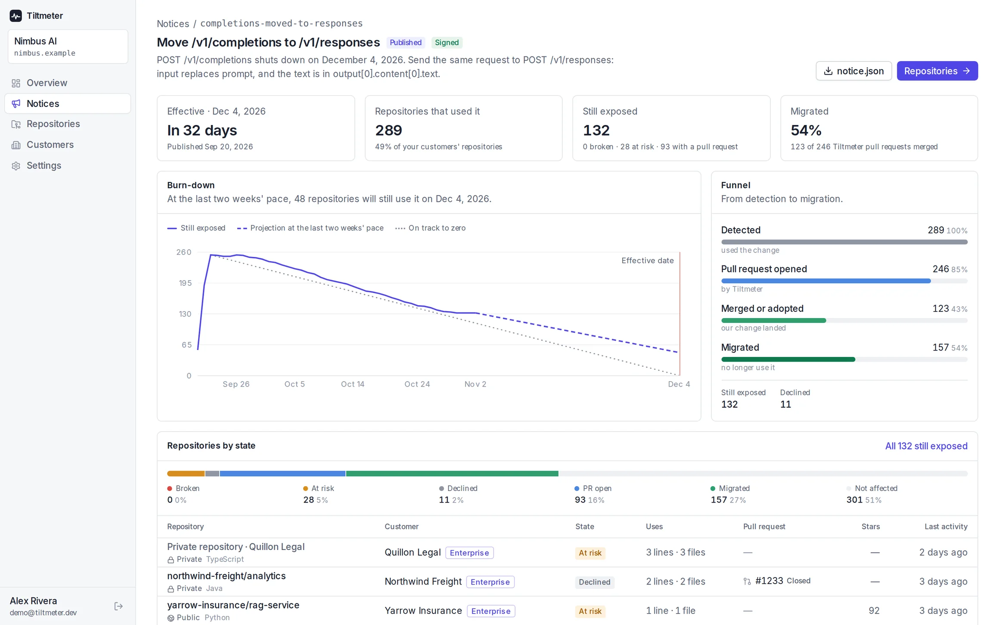
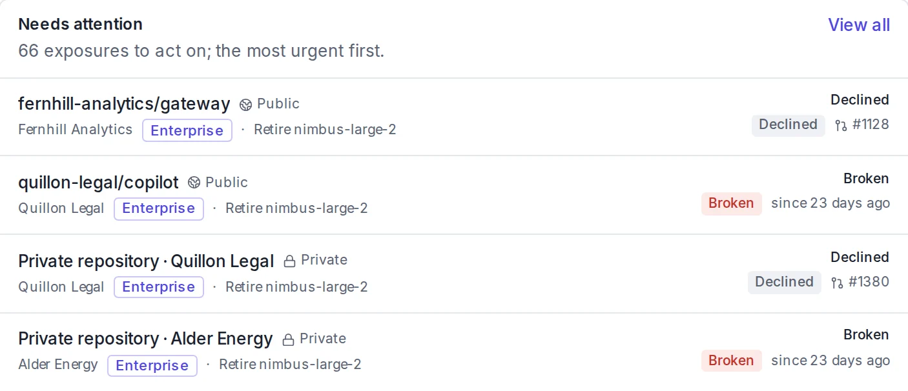

314,000
files on GitHub still call llama-3.3-70b-versatile, ten weeks after Groq shut it down on August 16.
When you retire a model, move an endpoint or rename a field, publish one signed notice. Tiltmeter opens a pull request that fixes each customer’s code before the date, and shows you who is still on the old version.
Building on someone else’s API? Tiltmeter is free for developers.
harvard-edge/cs249r_book #216329.7k stars
llama-3.1-8b-instant and llama-3.3-70b-versatile.socratiq/1 of 9 files
| 32 | // ─── AI Provider Models ─────────────────────────────────────────────────────── |
| 33 | // Controls which model each provider uses — edit here to swap models globally |
| 34 | export const PROVIDER_MODELS = { |
| 35 | Removed: GROQ: { model: 'llama-3.1-8b-instant', stream: true }, |
| 35 | Added: GROQ: { model: 'openai/gpt-oss-20b', stream: true }, |
| 36 | GEMINI: { model: 'gemini-2.5-flash', stream: true }, |
| 37 | CEREBRAS: { model: 'gpt-oss-120b', stream: true }, |
| 38 | SAMBANOVA: { model: 'gpt-oss-120b', stream: true }, |
Open #2163 on GitHubTimes in UTC
Tencent/AI-Infra-Guard #7287.2k stars
router.huggingface.co.agent-scan/1 of 2 files
| 254 | providers: |
| 255 | huggingface: |
| 256 | env_keys: ["HF_API_TOKEN", "HUGGINGFACE_API_KEY"] |
| 257 | Removed: base_url: "https://api-inference.huggingface.co" |
| 257 | Added: base_url: "https://router.huggingface.co/hf-inference" |
| 258 | endpoint: "/models/{{model}}" |
| 259 | default_model: "gpt2" |
| 260 |
@boy-hack approved these changes,
Verified locally on top of latest main (
33768c58) […] Only two references to the old URL exist in the repo, and both files are covered by this PR. Both YAML presets parse cleanly, and the agent-scan suite failure set is identical to the main baseline […]Thanks for the fix!
Open #728 on GitHubTimes in UTC
Tiltmeter opened 84 pull requests on 26 and 27 October 2026, against public deprecations from ten providers. This is where each one stood on 10 November.
A public test, not a customer list. We drafted every notice ourselves from the provider’s public deprecation page. No provider signed, endorsed or uses Tiltmeter.
Adopted means the maintainer closed the pull request and shipped the same fix in their own commit; GitHub counts it among 12 closed. The 17 merges took from 33 minutes (ruvnet/ruflo#4512) to 13 days; the median is 12 h 31 m.
Read all 84 pull requests. Data: status.json, from the GitHub API on 10 Nov 2026 at 03:03 UTC.
How it works
You describe the change once. Tiltmeter finds the code that still uses it, fixes it in each repository, and tracks every merge up to your shutdown date. The exhibits are from one real case: Groq’s retirement of two Llama models.
A small JSON file in an open format: the endpoint, what changed, what replaces it and the date. You sign it with a key served from your own domain, so nobody else can speak for your API. The GitHub Action can draft it from two versions of your OpenAPI spec.
notice.jsonExcerpt: 2 of its 5 changes
{
"id": "groq-retired-models-2026-08",
"provider": "api.groq.com",
"published_at": "2026-06-17T00:00:00Z",
"effective_at": "2026-08-16T00:00:00Z",
"endpoints": [{
"method": "POST",
"url": "https://api.groq.com/openai/v1/chat/completions",
"changes": [{
"path": "$.model",
"kind": "value_retired",
"before": "llama-3.1-8b-instant",
"replaced_by": "openai/gpt-oss-20b"
}, {
"path": "$.model",
"kind": "value_retired",
"before": "llama-3.3-70b-versatile",
"replaced_by": "openai/gpt-oss-120b"
}, …]
}]
}
No signature. We drafted this notice from Groq’s deprecations page and Groq never saw it. Signed by Groq, it would verify only against https://api.groq.com/.well-known/api-change-key.
It reads code as text, so the language doesn’t matter, and it recognizes provider SDKs in eight package ecosystems. Its merged fixes so far are in Python, TypeScript, JavaScript, Java and C.
| File | Line |
|---|---|
| socratiq/src_shadow/ | |
| configs/env_configs.js | 35 |
| js/components/settings/settings.js | 545 |
| js/index.js | 1587, 1988 |
| js/libs/agents/cloudflareAgent.js | 455, 627 |
| js/libs/agents/custom-api-adapter.js | 74 |
| js/libs/agents/duck-ai-cloudflare.js | 14 |
| js/libs/agents/supaAgent.js | 7 |
| js/libs/agents/test-auto-fill.js | 33, 74 |
| staffml/app/worker/src/ | |
| index.ts | 172, 176 |
Two of the thirteen are code comments and one is a label users see. The pull request changed all of them.
One reviewable pull request per repository, made in a fresh copy, with your notice quoted and anything the code can’t tell us listed for the reviewer. Public repositories get theirs from Tiltmeter. Private ones are covered when your customers run the free GitHub Action in their own CI.
15pull requests for Groq’s retirement, one per repository, all opened on 26 October 2026.
Each notice gets a ledger: who merged, who made the change their own way, who still has it open. You turn the old version off on the day you announced, knowing exactly who is left.
Groq’s 15, as of 10 November. In this test our notices came after Groq’s 16 August shutdown, so these pull requests fixed code that was already failing. A notice you sign arrives before the date. Groq’s ledger
The problem
Customers skim the changelog, the emails land in a shared inbox, and the shutdown date arrives anyway. Two public deprecations show what's left behind.
314,000
files on GitHub still call llama-3.3-70b-versatile, ten weeks after Groq shut it down on August 16.
78
repositories still read the subscription period field Stripe moved to the items in 2025. Stripe's own sample is one of them.
One deprecation, recorded twice
same API, same shutdown dateWithout Tiltmeter
With Tiltmeter
Production breaks
Nothing breaks
What you see
One page per notice: every repository that used the change, the state of its pull request, and a burn-down to your shutdown date. Design partners get it first, and shape what it becomes.


Outcomes
The work moves from your support team and your customers' backlogs into pull requests, reviewed and merged before anything breaks.
The fix is merged in your customers' code before the date, so the breakage that fills your support queue doesn't happen.
When every affected repository has a pull request and you can see who is left, you can turn the old version off on the date you announced instead of extending it.
Every repository Tiltmeter finds gets its own pull request, including the customers who never open your emails.
Trust and security
A pull request in someone else's code has to earn its review. Each one carries your signature, comes from an isolated sandbox, and waits for a person.
Each notice is signed with your key and verifies only against the public key at /.well-known/api-change-key on your domain. Every endpoint in it must be on your domain too.
The agent edits a fresh copy of each repository with file tools only, never anyone's own checkout. Your notice's text reaches it as data, never as instructions.
Every fix is an ordinary pull request that the maintainer reviews, merges or closes. What the agent can't know, like a new number format, is listed for the reviewer with your note quoted.
“Independently checked Anthropic's model overview, retirement table and Sonnet 5.5 migration guide. […] This conclusion does not rely on the unsigned Tiltmeter notice.”
“Thanks — Cloud-only switch, token paging and the early-end guard look right. Merging.”
Compared
Keep your changelog, your emails and your deprecation headers. Tiltmeter turns what they announce into a change in each customer's code.
| What it does | Changelog | Deprecation emails | Deprecation headersDeprecation, Sunset | tiltmeter |
|---|---|---|---|---|
| Arrives before anything breaks | Yes | Yes | Once the code runs | Before the date |
| Reaches the people who own the code | If they come looking | If the inbox is read | If someone reads the logs | In their repository |
| Points to the lines that use the change | No | No | The request, not the line | File and line |
| Writes the change | No | No | No | A reviewable pull request |
| Shows you who still uses it | No | Who opened it, not who migrated | No | By repository and customer |
Pricing
API providers and teams pay. Developers use Tiltmeter free, and every install is code a provider's notice can reach.
Design partners
Priced by the size of your customer base. Your first migration is free as a design partner.
We run your next deprecation with you, end to end: the signed notice, the pull requests in your users' public repositories under your name, and a tracker of every merge. Next on the roadmap: private repositories through a GitHub App your customers install, and a dashboard of who still calls the old version.
Run your next deprecation with usEarly access
Per repository. Early access.
For companies that depend on many third-party APIs. We're building it with the first teams: a GitHub App across your organization that covers private repositories with no CI to set up, a view of every API your services call and what changed, alerts the day a provider announces a change, and fixes included, run on our model keys.
Join early accessOpen source
Free and open source, MIT.
Run it on any repository to find API changes that already shipped, catch drift in CI and over MCP, and get each fix as a pull request. Every install is code a provider's notice can reach.
Tiltmeter for developersNo. We drafted those notices ourselves from each provider's public deprecation page, to test the idea in the open. No provider signed, endorsed or uses Tiltmeter. Yours could be the first deprecation signed by the provider itself.
Nothing, for public repositories: the pull request arrives like any other contribution. Private repositories are covered when a customer adds the free GitHub Action, which reads your signed feed on a schedule and runs the fix in their own CI, so their code never leaves it.
Yes. Point Tiltmeter at your staging API and the check that sees the change becomes the draft. A retired model or value takes a few lines of JSON written by hand.
Retired models and values, endpoints that moved or were removed, renamed fields, new types and new nulls. A note explains what the code can't infer, such as a new number format.
The maintainer reviews it like any other pull request, and can change it or close it. Nothing merges itself. Tiltmeter holds back edits to code that nothing uses, and lists what it couldn't know for the reviewer.
The core is open source under MIT, and the notice format is open: anyone can implement a reader. For API providers, pricing follows the size of your customer base, and your first migration is free as a design partner.
Bring the change you're planning. Your first migration is free as a design partner.
We run it with you, end to end
@profvjreddi commented,